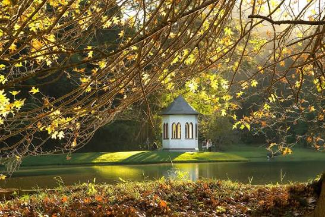
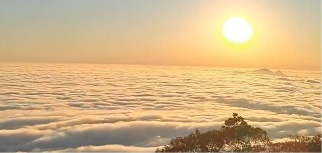
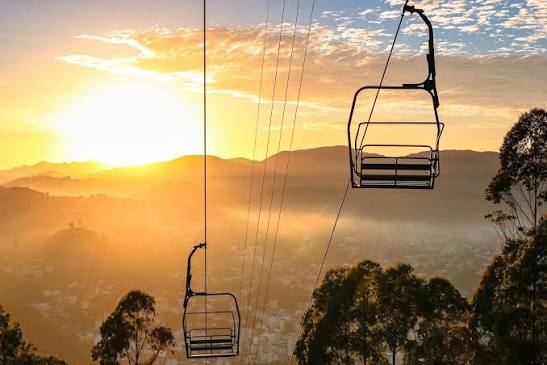
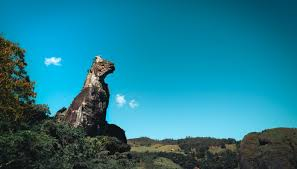
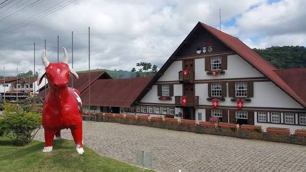

A cidade de Nova Friburgo possui pontos turísticos incríveis e aconchegantes para os turistas e moradores. Veja a seguir algumas opções para visitar:
Country Club
Pico do Caledônia
Teleférico - Praça do Suspiro
Parque Ecológico Cão Sentado
Casa Suíça

O Nova Friburgo Country Club é um dos clubes mais tradicionais da cidade de Nova Friburgo, RJ, localizado no Parque São Clemente. Fundado em 1957, o clube possui uma área de 194 mil metros quadrados e é conhecido por suas áreas de lazer, esportes e eventos. O clube foi projetado por Glaziou, um famoso paisagista francês, e é um importante ponto turístico, oferecendo uma experiência única de convívio social e contato com a natureza.

O Pico da Caledônia é um destino imperdível para amantes de aventura e natureza, oferecendo desafios físicos significativos e paisagens espetaculares. A subida exige preparo físico, mas a recompensa é uma vista panorâmica única da Serra do Mar e da Região Serrana do Rio de Janeiro. Possui altitude de 2.257 metros, oferecendo uma vista panorâmica incrível que alcança até a Baía de Guanabara e vários outros lugares em dias abertos.

O teleférico em Nova Friburgo, RJ, é uma das atrações mais famosas da cidade, inaugurado em 1975. Ele conecta a Praça do Suspiro ao Morro da Cruz, oferecendo uma vista panorâmica da cidade e da Serra do Mar. O passeio dura cerca de 40 minutos e inclui um espaço de lazer no primeiro estágio, como boliche e restaurante. O segundo estágio é um mirante que proporciona uma vista de 360° da cidade. O preço do passeio é de aproximadamente R$15,00 para não moradores e R$10,00 para moradores com comprovante

O Cão Sentado em Nova Friburgo é uma famosa formação rochosa que se tornou um símbolo da cidade. Localizado no Parque Ecológico Cão Sentado, a pedra tem cerca de 111 metros de altura e é conhecida por sua forma que lembra um cão sentado. O parque, que foi inaugurado em 1962, oferece trilhas, grutas e diversas atividades ao ar livre, como escaladas e arvorismo. A entrada no parque é gratuita, e ele é um destino popular para quem busca aventura e contato com a natureza.
